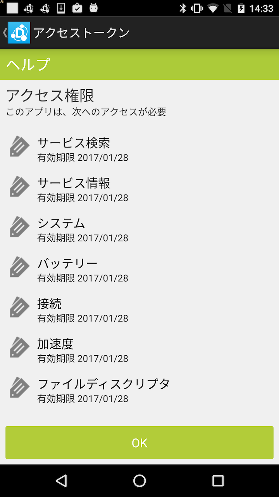

アクセストークン管理を押下することで、アクセストークンを管理する画面に遷移します。
Local OAuthでユーザから認可されたアプリのアクセストークンを管理します。
アクセストークンが登録されているアプリは、Device Connect Managerにアクセスすることができます。
各リストの右にある×を押下することで、アクセストークンを削除することができます。
アクセストークンが削除した場合には、アプリがDevice Connect Managerにアクセスしようとした時に再度Local OAuthで認可が必要になります。

各アクセストークンを押下することで、アクセストークンの情報を確認することができます。

アクセストークンには、アプリが使用するプロファイル一覧と有効期限が記載されています。